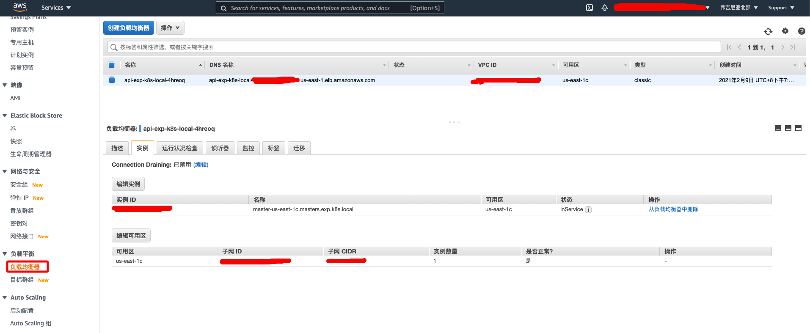
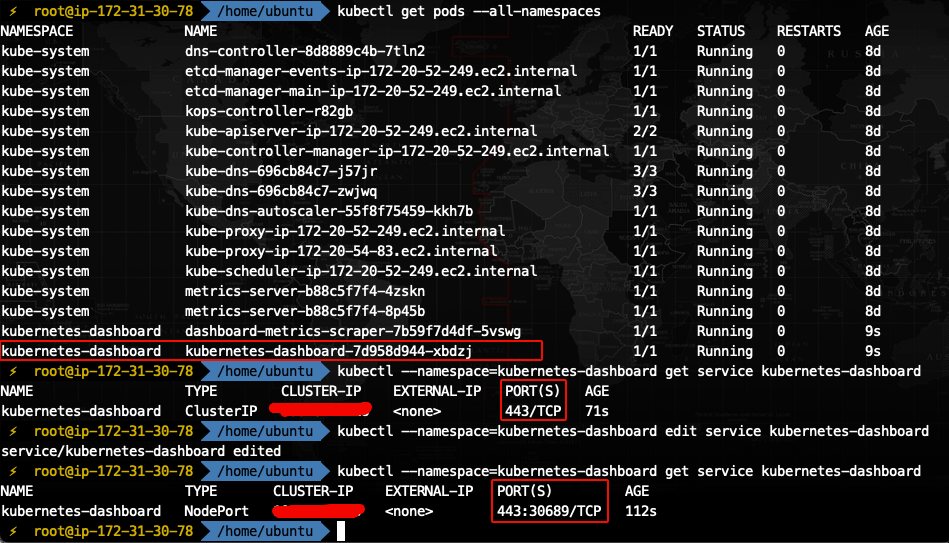

参数与版本
本文中涉及的所有工具或参数，如无特殊描述，均与下表相同：
| 条目 | 参数值/版本号 |
|---|---|
| kOps | 1.19.0 |
| kubectl | 1.19.7 |
| k8s cluster version | 1.19.7 |
| k8s cluster name | exp.k8s.local |
| s3 name | exp.k8s.local-state |
| region | us-east-1 |
| zone | us-east-1c |
| metrics-server | 集群内置 |
| dashboard | 2.0.1 |
由于 k8s 更新迭代非常快，而且对版本要求很严格，因此本文主要为了叙述搭建 k8s 集群的方法，涉及到的版本和参数可能在若干年月后就过时了，所以在部署的时候，对于出现版本号和参数的地方一定要格外留意，尽量不要直接复制命令执行，否则最终搭建出来的集群很可能会出现各种兼容性问题。详细可参考《Kubernetes 版本及版本偏差支持策略》。
工具说明
| 工具 | 用途 |
|---|---|
| AWS | 亚马逊云计算平台，类似于阿里云、腾讯云等，可以提供搭建 k8s 集群的云主机、S3 存储桶等资源 |
| awscli | AWS 命令行工具，可用于管理 AWS 平台上的授权服务 |
| kOps | 用于在 AWS 上搭建 k8s 集群的 oob（out-of-band） 工具，通过配置授权，它可以直接调度 AWS 上的资源，全自动创建并管理一个高可用的 k8s 集群 |
| kubectl | k8s 命令行工具，可用于对 k8s 集群下发命令 |
| kubernetes | 简称 k8s，可跨多个主机管理容器化的应用程序的开源系统 |
| dashboard | k8s 的 GUI 仪表板，可选插件 |
| 用于收集 k8s 集群指标（如 CPU、内存等）的可选插件，因已内置到 k8s 集群，不再推荐独立安装，避免出现版本兼容性问题 |
关于 metrics-server 版本兼容性问题，可以参考《kubectl edit 或者 apply 报 SchemaError》的说明，主要是 metrics-server 使用了新的 openapi-generator，导致生成的 openapi 格式与某些版本的 k8s 有差异，导致 kubectl 在解析 openapi 的 schema 时发生异常，以致只能回滚或重建集群。
因为我们是使用 kOps 安装的集群，为了避免出现版本兼容性问题，以后要安装 metrics-server、dashboard 之类的插件，最好直接通过 kops/addons 目录指引按需安装。
准备工作：部署 oob-server
首先大概了解一下部署架构：

如上图，oob-server 是在 AWS 手动申请的一台 EC2 服务器，我们在这台服务器上安装 awscli、kOps、kubectl 工具后，就可以以 oob（带外管理）方式调度 AWS 的资源（包括 EC2、S3、VPC、LB、安全组等）创建 k8s 集群。
因为 oob-server 不属于集群的一部分，因此在 aws 申请一台低配的机器即可（本文为 2C4G 的 Ubuntu 18.04）。尔后所有操作均在 oob-server 上执行即可，无需登陆 k8s 集群的任何节点。
安装 kubectl
若了解 k8s 集群的同学可以知道，集群中有一个 kube-apiserver（由 kOps 负责安装），此处所安装的 kubectl 就是其客户端。
安装命令如下：
curl -LO "https://dl.k8s.io/release/$(curl -L -s https://dl.k8s.io/release/stable.txt)/bin/linux/amd64/kubectl"
chmod +x kubectl
mv kubectl /usr/local/bin/若要下载特定版本，只需把命令中的 $(curl -L -s https://dl.k8s.io/release/stable.txt) 部分替换为指定版本即可。建议一定要去看下当前最新的稳定版是什么，k8s 对版本兼容性是有严格要求的，一旦不匹配集群会跑不起来。
验证安装命令如下：
kubectl version --short --client
kubectl version可同时查看客户端和服务端版本，但现在服务端还没安装，查询会超时，故先查客户端。
安装 kOps
安装命令如下：
curl -Lo kops https://github.com/kubernetes/kops/releases/download/$(curl -s https://api.github.com/repos/kubernetes/kops/releases/latest | grep tag_name | cut -d '"' -f 4)/kops-linux-amd64
chmod +x kops
mv kops /usr/local/bin/kops若要下载特定版本，只需把命令中的 $(curl -s https://api.github.com/repos/kubernetes/kops/releases/latest | grep tag_name | cut -d '"' -f 4) 部分替换为指定版本即可。建议一定要去看下当前最新的稳定版是什么，确保 kOps 支持安装的 k8s 集群版本与前面安装的 kubectl 版本一致。
关于 kOps 支持安装的 k8s 版本可以参考《kOps版本和版本控制》。
验证安装命令如下：
kops version安装 awscli
安装命令如下：
apt-get update
apt-get install awscli验证安装命令如下：
aws为了通过命令行执行 aws 控制台的部分功能，需要为其配置你个人 AWS 账号的 AccessKeyID 和 SecretAccessKey 进行授权。
打开 AWS 的 IAM 控制面板，点击左侧导航栏的【用户】便可找到你自己的个人账号，点击该账号，点击【安全证书】标签，点击【创建访问密钥】，即可得到 AccessKeyID 和 SecretAccessKey。
这个密钥只是临时用的，下面创建了 kops 用户之后记得回来删除掉。

执行命令 aws configure 配置 awscli 权限，会提问 4 个问题：
AWS Access Key ID: 输入上面生成的 AccessKeyIDAWS Secret Access Key: 输入上面生成的 SecretAccessKeyDefault region name: 输入你期望 k8s 的 EC2 实例应该创建在哪个地区，本文统一为us-east-1Default output format: awscli 执行结果回显到命令行界面的格式， 默认为text， 本文统一为json
注意 AWS 关于 《Regions, Availability Zones, and Local Zones》 的区别。此处填的是 Regions（地区），例如
us-east-1。 后面会要求细化粒度到 Availability Zones（可用地区），例如us-east-1a、us-east-1b、us-east-1c等。
创建 kOps 专用的 IAM 用户
为了使用 kOps 部署集群，需要创建一个专用的 IAM 用户 kops，并分配这些权限：
- AmazonEC2FullAccess
- AmazonRoute53FullAccess
- AmazonS3FullAccess
- IAMFullAccess
- AmazonVPCFullAccess
由于前面 awscli 已经拥有了你的 AWS 账号权限，因此可以直接在命令行创建 kops 用户并为其分配上述权限：
aws iam create-group --group-name kops
aws iam attach-group-policy --policy-arn arn:aws:iam::aws:policy/AmazonEC2FullAccess --group-name kops
aws iam attach-group-policy --policy-arn arn:aws:iam::aws:policy/AmazonRoute53FullAccess --group-name kops
aws iam attach-group-policy --policy-arn arn:aws:iam::aws:policy/AmazonS3FullAccess --group-name kops
aws iam attach-group-policy --policy-arn arn:aws:iam::aws:policy/IAMFullAccess --group-name kops
aws iam attach-group-policy --policy-arn arn:aws:iam::aws:policy/AmazonVPCFullAccess --group-name kops
aws iam create-user --user-name kops
aws iam add-user-to-group --user-name kops --group-name kops创建成功后，可以在 AWS 的 IAM 控制台 UI 上看到用户
kops。
然后生成 kops 用户密钥：
aws iam create-access-key --user-name kops此命令会返回 kops 用户的 AccessKeyID 和 SecretAccessKey （与在 AWS 的 IAM 控制面板生成的效果是一样的）。
执行命令 aws configure 更新 awscli 为 kops 用户的权限，依然会问 4 个问题：
AWS Access Key ID: 输入kops用户的 AccessKeyIDAWS Secret Access Key: 输入kops用户的 SecretAccessKeyDefault region name: 保持不变即可Default output format: a保持不变即可
同时把 kops 用户的配置信息写入到 ~/.bashrc 环境变量：
echo 'export AWS_ACCESS_KEY_ID=...' >> ~/.bashrc
echo 'export AWS_SECRET_ACCESS_KEY=...' >> ~/.bashrc
echo 'export AWS_REGION=us-east-1' >> ~/.bashrc最后生成 ssh 密钥（会有几个问题，回车到底即可）：
ssh-keygen生成的密钥位置为
~/.ssh/，此密钥可用于之后直接 ssh 登陆 k8s 集群的任意节点。
创建 S3 Bucket
S3 存储桶用于存储集群数据，其命名格式要求为: <custom_name>.k8s.local-state 。
本文 S3 取名为 exp.k8s.local-state （注意后缀一个字符都不能改）。
创建命令如下：
aws s3 mb s3://exp.k8s.local-state --region us-east-1 --endpoint-url https://s3.us-east-1.amazonaws.com命令中的
--region和--endpoint-url参数均涉及 region 名称，和前面配置 awscli 时的 region 名称保持一致即可。
存储桶名称要求全球唯一，如果创建失败了，注意看提示是否名称已经被占用了。
创建成功后，访问 AWS 的 S3 控制面板 可以看到该存储桶：
最后把 s3 的配置信息写入到 ~/.bashrc 环境变量：
echo 'export KOPS_STATE_STORE=s3://exp.k8s.local-state' >> ~/.bashrc创建 k8s 集群
前面准备工作完成后，即可使用 kOps 创建集群。
生成集群的配置文件：
kops create cluster \
--name=exp.k8s.local \
--zones=us-east-1c \
--master-size="t2.medium" \
--node-size="t2.medium" \
--ssh-public-key="~/.ssh/id_rsa.pub" \
--kubernetes-version="1.19.7"参数说明：
--name: 集群名称，为了让 kops 创建基于 gossip 的集群，固定格式为<custom_name>.k8s.local，这样它就可以自动关联到前面的 S3 Bucket 名称exp.k8s.local-state。--zones: 这里填的不是 Regions（地区），而是 Availability Zones（可用地区）即 Availability Zones，本文固定为us-east-1c。--master-size: 为 k8s 集群的 master 节点申请的 EC2 实例类型，决定了实例的硬件配置，本文固定为t2.medium，具体的 ec2 类型可参考这里。--node-size: 同上，申请的是 k8s 集群的 worker 节点。--ssh-public-key: 前面生成的 ssh 密钥路径，目的是把 oob-server 的 ssh 公钥写入 k8s 集群的每一个节点，以便之后可以直接通过 ssh 登陆。--kubernetes-version: 期望创建的 k8s 集群版本，可以参考《kOps版本和版本控制》查看当前所安装的 kOps 支持安装的版本范围，本文固定为1.19.7。
create 命令执行成功后, 会提示执行 kops update cluster --name exp.k8s.local --yes --admin 命令正式创建集群，但这里先不创建。
我们需要执行命令 kops edit cluster exp.k8s.local 调整集群的配置文件，主要修改两处：
修改kubelet.anonymousAuth: true: 因为搭建的是测试用的集群，避免认证麻烦，这里把匿名打开。- 追加
metricsServer.enabled: true: 因为后面需要安装 dashboard，所以这里要启用内置的 metrics-server 插件。
修改后的集群配置文件如下（仅适用于 1.19.7 版本）：
# Please edit the object below. Lines beginning with a '#' will be ignored,
# and an empty file will abort the edit. If an error occurs while saving this file will be
# reopened with the relevant failures.
#
apiVersion: kops.k8s.io/v1alpha2
kind: Cluster
metadata:
creationTimestamp: "2021-02-08T03:28:29Z"
generation: 1
name: exp.k8s.local
spec:
api:
loadBalancer:
class: Classic
type: Public
authorization:
rbac: {}
channel: stable
cloudProvider: aws
configBase: s3://exp.k8s.local-state/exp.k8s.local
containerRuntime: docker
etcdClusters:
- cpuRequest: 200m
etcdMembers:
- instanceGroup: master-us-east-1c
name: c
memoryRequest: 100Mi
name: main
- cpuRequest: 100m
etcdMembers:
- instanceGroup: master-us-east-1c
name: c
memoryRequest: 100Mi
name: events
iam:
allowContainerRegistry: true
legacy: false
kubelet:
anonymousAuth: false
kubernetesApiAccess:
- 0.0.0.0/0
kubernetesVersion: 1.19.7
masterInternalName: api.internal.exp.k8s.local
masterPublicName: api.exp.k8s.local
metricsServer:
enabled: true
networkCIDR: 172.20.0.0/16
networking:
kubenet: {}
nonMasqueradeCIDR: 100.64.0.0/10
sshAccess:
- 0.0.0.0/0
subnets:
- cidr: 172.20.32.0/19
name: us-east-1c
type: Public
zone: us-east-1c
topology:
dns:
type: Public
masters: public
nodes: public配置文件默认以 vim 模式编辑，只要格式符合 yaml ，并且配置项都是当前 k8s 版本支持的，就可以成功保存修改内容（否则会提示保存失败）。
执行 kops update cluster --name exp.k8s.local --yes --admin 命令即可真正创建 k8s 集群。
创建过程大概需要 10 分钟，此时切换到 AWS 的 EC2 控制面板 查看【实例】，可以看见 k8s 的实例正在创建中。
当前版本的 kOps 所创建的集群只有 2 个节点（master 和 worker 节点各一），较旧的 kOps 版本所创建的集群有 3 个节点（1 个 master 节点和 2 个 worker 节点）。
通过 kops validate cluster 命令可查看集群各个节点状态，若均为【Ready】即代表集群创建成功：
操作 k8s 集群
常用操作命令
以 kOps 方式部署的集群，可以在 oob-server 通过 kubectl 直接操作，无需登陆到集群的任何节点。常用命令如下：
kubectl get nodes： 查看集群节点kubectl cluster-info： 查看集群域名地址信息kubectl version： 查看集群版本kubectl config view： 查看集群配置（脱敏），其实就是查看~/.kube/config文件（未脱敏）kubectl get deployments --all-namespaces： 查看所有名字空间下的 Deploymentkubectl get rs --all-namespaces： 查看所有名字空间下的 ReplicaSetkubectl get pods --all-namespaces： 查看所有名字空间下的 podkubectl get svc --all-namespaces： 查看所有名字空间下的 service
登陆到集群节点
因为前面在 oob-server 创建集群时，已经通过 kOps 配置了 ssh 密钥，所以可以直接从 oob-server 登陆到集群的任意节点：从 EC2 控制台获取集群节点的 IP 后，直接 ssh 登陆即可（注意配置安全组策略）。
旧版本的 kOps 所创建集群节点，其 ssh 的登陆账号默认都是 admin，但是新版本会以集群节点的操作系统名称作为 ssh 的登陆账号，例如 ubuntu、centos 等。 集群节点所使用的操作系统一般与 oob-server 服务器一致，也可在 EC2 控制台直接查看各个节点实例的操作系统名称。
访问 k8s 集群
获取服务地址
通过命令 kubectl cluster-info 可查看集群的域名地址信息，其中【Kubernetes master】即为 master 节点的服务地址，也是 kube-apiserver 的服务地址。
在 AWS 环境中，该域名地址是由 LB （负载均衡器）提供的，可以在 AWS 控制台的【负载均衡器】找到它，可以发现它被解析到 master 节点：

获取账号密码
当通过浏览器访问 kube-apiserver 时，会要求输入 BasicAuth 。
默认情况下集群有两个系统账号 admin 和 kube，可以通过 kOps 获取其密码：
kops get secrets kube --type secret -oplaintext
kops get secrets admin --type secret -oplaintext某些旧版本的 kOps 有 BUG，获取到的密码是反的，就是说 kube 返回的是 admin 的密码， admin 返回的是 kube 的密码。
部署 dashboard
安装
为了方便从 GUI 管理 k8s ，推荐安装 kubernetes-dashboard。又因为前面是通过 kOps 安装集群的，为了避免版本兼容性问题，可以直接从 kops/addons/kubernetes-dashboard/addon.yaml 获取匹配的版本，然后获取其 yaml 脚本进行安装。
例如当前安装的 k8s 集群版本为 1.19.7 ，则应使用 2.0.1 版本的 dashboard， 故而安装命令为：
kubectl apply -f https://raw.githubusercontent.com/kubernetes/kops/master/addons/kubernetes-dashboard/v2.0.1.yaml通过 kubectl get pods --all-namespaces 命令可验证是否安装成功： 当名为 kubernetes-dashboard-xxxxx 的 pod 其状态为 READY=1/1， STATUS=Running 时，即安装成功。
配置登陆账号
为了访问 dashboard，我们还需为其配置一个服务账号。
在 oob-server 创建名为 eks-admin-service-account.yaml 的配置文件（文件名随意），其内容为：
apiVersion: v1
kind: ServiceAccount
metadata:
name: eks-admin
namespace: kube-system
---
apiVersion: rbac.authorization.k8s.io/v1beta1
kind: ClusterRoleBinding
metadata:
name: eks-admin
roleRef:
apiGroup: rbac.authorization.k8s.io
kind: ClusterRole
name: cluster-admin
subjects:
- kind: ServiceAccount
name: eks-admin
namespace: kube-system该配置文件定义了一个服务账号 eks-admin（若需要自定义其他账号名称，修改 eks-admin 即可，下同）。
然后执行命令 kubectl apply -f eks-admin-service-account.yaml 将其绑定到 k8s 集群即可。
以后访问 dashboard 时，都需要提供 token 用于登陆，此时可在 oob-server 执行命令 kubectl -n kube-system describe secret $(kubectl -n kube-system get secret | grep eks-admin | awk '{print $1}')，该命令可生成用户 eks-admin 的临时 token， 将其填入登陆界面即可。
注意 token 有效期只有半小时，过期后需要执行上述命令重新生成
访问 dashboard
根据 kubernetes-dashboard 的官方说明，dashboard 的访问地址为：https://<cluster-address>/api/v1/namespaces/kubernetes-dashboard/services/https:kubernetes-dashboard:/proxy/。
其中 <cluster-address> 为 kubectl cluster-info 命令得到 Kubernetes master 地址。
但是事实上无法访问，会一直报错 401 Unauthorized。
原因是在 1.16 版本之后，如果不是从 localhost 访问 kube-apiserver，都必须要认证后方可访问的。但是我们部署集群时，因为是测试环境，既没有配置证书、也没有配置 BasicAuth，所以从公网是无法直接访问的。
但是因为是测试用集群，不想过于麻烦，有没有办法绕过访问限制呢？下面提供两种绕过方法。
NodePort 访问方式
此方法参考自《Web基础配置篇（十七）: Kubernetes dashboard 安装配置》，执行起来较为简单。
NodePort 原理是把 dashboard 的服务端口映射到 master 节点的宿主机的某个端口，然后直接访问 https://<master-ip>:<port>/ 即可（注意配置 EC2 安全组策略）。
这种访问方式绕过了 kube-apiserver，好处是访问 dashboard 服务时不需要再输入一串极长的地址，坏处是把端口暴露到公网，不但安全性下降，而且丧失了 LB 带来的好处，不建议在生产环境中使用。
具体的配置方式如下：
- 查看 dashboard 服务：
kubectl --namespace=kubernetes-dashboard get service kubernetes-dashboard，可见当前服务类型为 ClusterIP - 编辑 dashboard 服务：
kubectl --namespace=kubernetes-dashboard edit service kubernetes-dashboard，把type: ClusterIP修改为type: NodePort，因为是 vim 编辑，故用 wq 保存即可 - 再次查看 dashboard 服务：
kubectl --namespace=kubernetes-dashboard get service kubernetes-dashboard，服务类型已变更为 NodePort，且服务端口从 443 映射到了 30689（随机的）

记住映射的端口，然后我们到 AWS 的 EC2 控制面板 查看集群 master 节点的公网 IP，访问 https://<master-ip>:<port>/，填入前面 eks-admin 账号的 token 即可登陆。
注意端口是从 443 映射出来的，因此必须用 https 协议访问，但由于证书不可信，使用 chrome 访问该地址会拦截，可以鼠标点击页面空白处，键盘输入
thisisunsafe强制访问。
代理转发访问方式
这个方法会比前一个方法更复杂一些。
需要知道，若 k8s 集群是部署在本地，那么通过 kubectl proxy 命令可以直接把 kube-apiserver 服务映射到本地 http/8001 端口的，再根据 kubernetes-dashboard 的官方说明，直接访问 http://localhost:8001/api/v1/namespaces/kubernetes-dashboard/services/https:kubernetes-dashboard:/proxy/ 即可。
但现在集群是部署在 AWS 上的，我们需要通过公网访问，才有了限制。
于是我们尝试放开 kubectl proxy 限制条件，在 oob-server 执行命令：
kubectl proxy --address='0.0.0.0' --port='8001' --accept-hosts='^*$'
意即所有网卡（公网和内网）均转发了 8001 端口服务，而且接受所有来源的请求（注意配置 EC2 安全组策略）。
此时从公网访问 http://<oob-server-ip>:8001 已可成功打开 kube-apiserver 服务，不会再报 401 Unauthorized 异常了。
但是从公网访问 http://<oob-server-ip>:8001/api/v1/namespaces/kubernetes-dashboard/services/https:kubernetes-dashboard:/proxy/ 时，虽然可以打开 dashboard 登陆页面，但是无法登陆（按钮变灰），报错为：Insecure access detected. Sign in will not be available. Access Dashboard securely over HTTPS or using localhost.
详细原因见《Accessing Dashboard》，主要是 dashboard 为了安全起见，在 1.16 版本之后，如果使用 http 协议，只能从本地登陆（127.0.0.1 或 localhost）; 如果使用 https ，才可以从非本地登陆。

简而言之，kubectl proxy 只是绕过了 kube-apiserver 的限制，没有绕过 dashboard 的限制。
为此，这里参考了 《访问 K8s Dashboard 的几种方式》，可以做一个 ssh 本地端口转发，把本地流量通过 ssh 转发到 oob-server 的 8001 端口，oob-server 再通过 kubectl proxy 把流量转发到 k8s 集群（生产环境不建议使用此方式）。
具体方法如下：
- 修改 oob-server 的 sshd 服务，除了 22 端口外，增加监听一个端口用于本地端口转发，如 54322 ：
vim /etc/ssh/sshd_config，取消Port 22注释，并添加一行Port 2222， 重启 sshd 服务 - 在 oob-server 执行命令
kubectl proxy（即只代理 127.0.0.1:8001， 不能是 0.0.0.0:8001） - 在本地终端执行命令：
ssh -L localhost:8001:localhost:8001 -NT ubuntu@<oob-server-ip> -p 2222 - 在本地浏览器访问
http://localhost:8001/api/v1/namespaces/kubernetes-dashboard/services/https:kubernetes-dashboard:/proxy/#/login，此时 dashboard 的登陆按钮不再是灰色，可点击登陆
删除 k8s 集群
删除集群（会自动释放 EC2 实例、LB、安全组等资源，但 IAM 账号 和 S3 不会释放）：
kops delete cluster exp.k8s.local --yes
删除配置（主要是集群的一些配置信息，包括登陆认证等，为了避免以后重建集群时出现各种原因不明的认证问题，最好是删掉）:
rm -rf ~/.kubek8s 集群数据是存储在 S3 Bucket 的，只能访问 AWS 的 S3 控制面板 删除
FAQ
集群部署过了一段时间后，kubectl 报错 Unauthorized
例如在 oob-server 执行 kubectl version 命令后，只能查看 kubectl 的 Client 端版本，而 Server 端版本则要求登陆：
Client Version: version.Info{Major:"1", Minor:"19", GitVersion:"v1.19.7", GitCommit:"1dd5338295409edcfff11505e7bb246f0d325d15", GitTreeState:"clean", BuildDate:"2021-01-13T13:23:52Z", GoVersion:"go1.15.5", Compiler:"gc", Platform:"linux/amd64"}
error: You must be logged in to the server (the server has asked for the client to provide credentials)这是因为从 kOps 1.19 开始，kOps 从集群导出的证书仅在 18h 内有效，过期 oob-server 和集群就无法通讯了。此时需要在 oob-server 手动执行命令刷新证书：
# 集群名称根据实际情况修改
kops update cluster --name exp.k8s.local --yes --admin测试环境尚可接受，为了一劳永逸，在生产环境建议使用其他身份验证机制。
此问题只存在于 oob-server，若直接登陆到集群节点执行 kubectl 命令，是不会有此问题的
登陆 dashboard 一段时间后，报错 Unauthorized
前面已经说过，dashboard 的服务账号 eks-admin 的 token 是临时生成的，每次有效期只有半小时，过期后需要执行以下命令重新生成：
# 服务账号名称根据实际情况修改
kubectl -n kube-system describe secret $(kubectl -n kube-system get secret | grep eks-admin | awk '{print $1}')